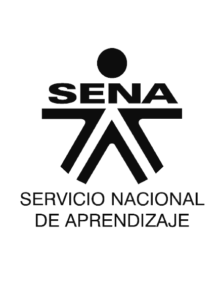

Te presentamos el logo del Sena

A continuación te explicaremos su significado:
representa los caminos que el aprendiz puede tomar (las decisiones) para seguir adelante
enfocadas a la formación del hombre para una buena calidad de vida.
Así mismo también representa la responsabilidad que debe tener el
aprendiz con su propio proceso de aprendizaje.